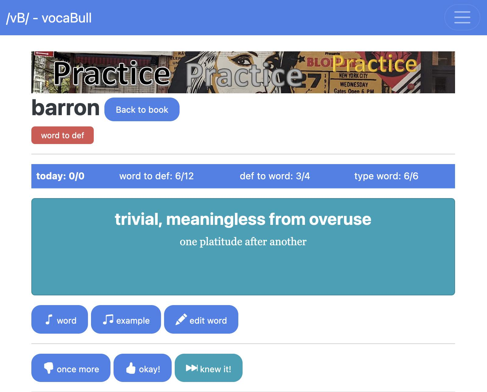
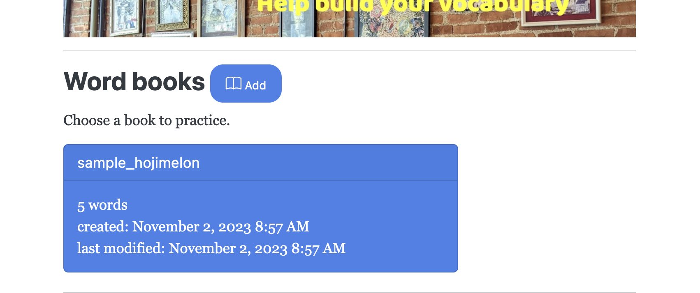
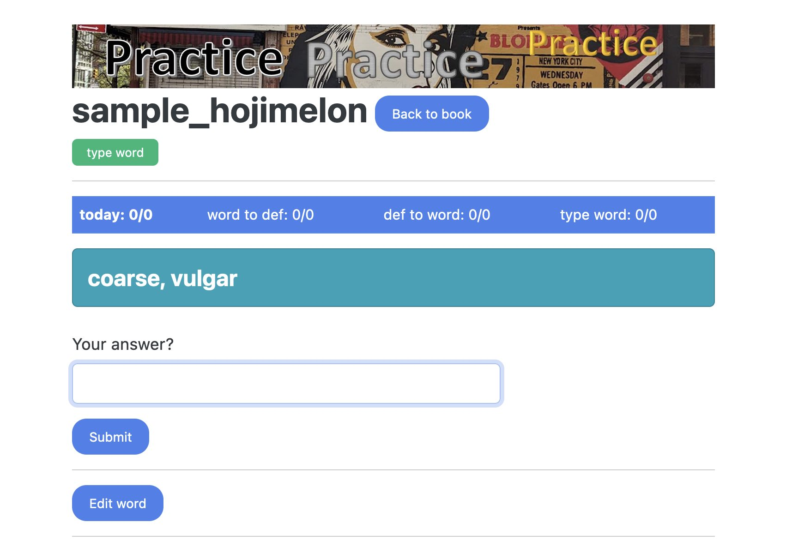
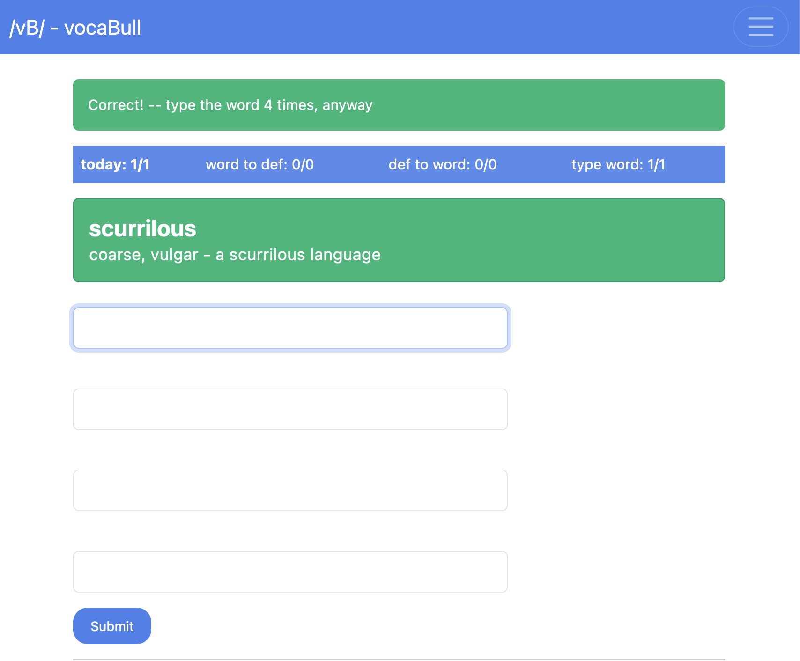
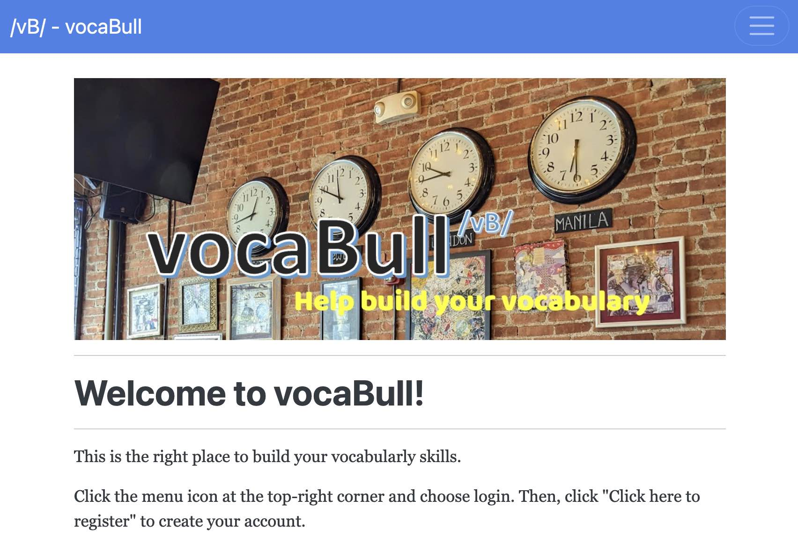

Table of Contents
1. はじめに
先日の エントリー で書いたようにPythonのWebフレームワークであるFlaskに入門したので、Flaskを使ってボキャビル用のWebアプリ Vocabull (server) を作って公開しました。括弧付きで (server) とあるのは、以前にもボキャビル用のスクリプト 旧Vocabull を作っていてそのWebアプリ版のつもりで開発を始めたためです。だいぶ規模が大きくなり、ほとんど別物になりましたが。。。
2. Vocabull (server)
2.1. Overview
フリーで使える pythonanywhere にデプロイしてみました。アクセスは こちら から。 
Vocabull (server; 以下、単にVocabullと記載)は単語カード+アルファの機能を持つボキャビル用Webアプリです。以下の3つのモードがあります。
- 単語カード(単語 → 意味) →
word to defモード - 単語カード(意味 → 単語) →
def to wordモード - スペル練習 →
type wordモード
VocabullはWebアプリなので、iPhoneやAndroidなどのモバイルデバイスからもアクセスできます。私のGoogle Pixel 4上のFirefoxからはこんな感じです:

2.2. Vocabullの特長
2.2.1. 直近の知らない単語が繰り返し出てくる
単語カードモードでは、直近の知らない単語10個を(覚えるまで)順にリピートします。知っている単語は次々と進み、知らない単語だけ繰り返し練習できるので、単なる単語カードアプリよりも記憶効率が良いと思います。
2.2.2. スペルテスト＆練習モード
単語カードではどうしてもスペルが覚えづらいですが、Vocabullにはスペル練習モードがあります。間違ったら何度でも、正解しても4回は正しいスペルをタイプさせられます。全く知らない単語を覚える際にはこのモードが便利です。
2.2.3. パソコンでもモバイルでも
スペル練習モードでは単語を繰り返しタイプするのでパソコンが向いていますが、単語カードモードはモバイルデバイスでソファーやベッドの上からでもボキャビルできます。
2.2.4. 即時セーブ
どのデバイスからアクセスしたかによらず、学習状況はリアルタイムにデータベースに保存されます。複数デバイスから同時にアクセス可能です。
2.2.5. 単語の発音がわかる(新機能; 7/7/2023)
Pronounce word ボタンをクリックすると、単語を読み上げます。音声合成なのでナチュラルではありませんが、単語の発音確認には十分と思います。以前はより自然なgoogleのgttsライブラリを使っていましたが、使用制限がキツイので使用を断念しました。(一日100リクエスト上限て。。。)
ブック単位に発音する言語をコードで指定可能です。初期値はアメリカ英語("en-US")です。ブックをエディットする際に設定できます。
| 発音言語 | 言語コード | コメント |
|---|---|---|
| アメリカ英語 | en-US | |
| イギリス英語 | en-GB | だいぶいまいち |
| フランス語 | fr-FR | |
| 日本語 | ja-JP | 和製英語が聞けます 笑 |
| ドイツ語 | de-DE | |
| スペイン語 | es-ES |
3. 使い方
クイックスタートはWebアプリの操作説明です。お試し版を pythonanywhere.comで公開 しました。
注意: Vocabullはまだ開発途中なので、たまにデータベースの互換性が無くなります。ブックや練習状況のデータが消えても困らないように定期的にバックアップするようにしてください。Vocabullにログインできなくなったら、改めてアカウント作成、ログイン後にバックアップデータからリストアしてください。
3.1. 流れ
こんな感じで使えます。
- https://achiwa912.pythonanywhere.com/ を開く
- ログイン画面からユーザー登録する
- ログインする
- (サンプル)ブックを選ぶ
- ボキャビルする
3.2. クイックスタート
3.2.1. ユーザー登録＆ログイン
- ブラウザーからVocabullサーバーの動いているURLにアクセスします。こちらから どうぞ。

- 画面上部にあるナビゲーションバー右隅にあるメニューアイコン >
Login>Click here to registerとクリックする

- ユーザー名とパスワードを入力してアカウントを作成する
- パスワードはハッシュ値を保存するだけなので(仮にハッキングされても)安全です
- ユーザー名とパスワードを入力してログインする
3.2.2. サンプルブックを選ぶ(新機能 7/8/2023)
- 初めてログインすると、サンプルのブックが登録されています。sample_<ユーザー名>という名です。これをクリックしてみてください。

- すると、サンプルブックのページが開きます。

3.2.3. 単語カードモード

Practiceメニュー >word to def(単語 → 意味)またはdef to word(意味 → 単語)を選択- 練習画面が表示されるので、単語カードをクリックして答えを見る

- 単語を知らなかったら
Once moreをクリック- しばらくしたらまた出てきます
- 単語を覚えたら
Memorized for nowをクリック- このラウンドではもう出てきません(全ての単語を一巡するまで)
- 単語を知っていたら
Knew it!をクリック- 5ラウンド出てきません。。
- 単語の発音が知りたかったら
Pronounce wordをクリック Back to bookを押すとブック画面に戻る
3.2.4. スペルテスト＆練習モード
Practiceメニュー >type wordをクリック

- 「意味」が表示されるので単語をタイプ >
returnキーを押す - 合っていても間違っていても4回タイプさせられる
- 間違っていたらしばらく後でまた出てきます
- Tip: マウスよりもキーボードで
return(tabでもOK)を使ったほうが操作性が良いです

- 単語の発音が知りたかったら
Pronounce wordをクリック - 4回単語をタイプして
Submitを押すと次の単語へ
3.2.5. ブックを作成し、単語を登録する
サンプルブック以外に、ブックを自分で作成して単語を登録することもできます。
- My Books >
Addボタンをクリック - ブック名をタイプして
Submitをクリック

- 新たに出来たブックカード >
Add wordをクリック - 単語(word)と意味(definition)を入力して
Submitをクリック- 何回か繰り返して複数単語を登録してください

3.2.6. あるいは、単語をファイルからインポートできる
- 単語定義ファイルを用意する
- 1行に1単語の定義を書く
- 行は「単語」「意味」(オプションで「例文」)をタブ記号で連結したもの
- 例えば:
strident shrill, harsh, rough [in more ******** tones] lassitude weariness, fatigue deleterious bad, harmful [a *********** effect on health]
- ブックページに移動する
Load from file>Browse...とクリックし、ファイルを選択する >Submit- 最大64KBの".txt"ファイルのみアップロードできます → リストア機能のために1MBまで増やしました
3.2.7. バックアップとリストア
Vocabullはまだ開発途中なので、いつデータベースが壊れてデータが全て失われるかわかりません。多くの単語を手動登録した後など、なるべくこまめにバックアップを取っておくことをおすすめします。
- バックアップの取り方
- ログインした状態の先頭ページを下にスクロールするとBackup and restoreというセクションがあります
- そこで
Export allをクリックすると、ローカルにvocabull.jsonというファイルをダウンロードします。これがバックアップファイルです。 - 何度もバックアップすると、vocabull(1).json等のファイルが作られますが、気にしないでOKです。リストアの際に最新のファイルを選ぶようにします。
- リストアの仕方
- Backup and restoreセクションにある
Import and restoreボタンを押す Browse...を押してファイル(vocabull.json)を選択し、Submitボタンを押す
リストアは、全てがなくなって新たにユーザー登録した後でもできますし、(やりたければ)バックアップした直後でもできます。バックアップ直後にリストアしても、何も変わりませんが。。。
リストアは学習状態(スコア)も戻ります。正確に言うと、現在のスコアとバックアップデータのスコアの高い方が採用されます。
- Backup and restoreセクションにある
4. サーバーセットアップ
pythonanywhereで使う分には必要ありません。自分でサーバーを立ててみたい方に。
- Python 3.10以降をセットアップする
- githubのレポジトリをクローンしてくる
git clone git@github.com:achiwa912/vbs.git
- (推奨)仮想環境を作る
cd vbs python -m venv ve source ./ve/bin/activate
- 前提ライブラリをインストールする
pip install -r requirements.txt
- 環境変数を設定する
export FLASK_APP=vbs.py
- データベース作成などの初期設定をする
flask initial-setup
- webサーバーをインストールして動かす
pip install gunicorn gunicorn --bind 0.0.0.0:5000 vbs:app
- WebブラウザーからサーバーURLのポート5000にアクセスする。例えば、
http://192.168.0.103:5000
5. Pythonanywhereについて
残念なことに Heroku が有料化してしまったので、ちまたで評判の良さそうな Pythonanywhere を使ってみました。開発者としてクラウド(Paas)を使うのは初めてですが、(ドキュメントもろくに読まず)適当に試行錯誤していたらデプロイできてしまいました。やったこと。
- https://www.pythonanywhere.com/pricing/ から
Create a Beginner accountをクリックし、アカウント登録する Consoleをクリックするとbashが使えるので、githubのレポジトリをクローンしてくる
git clone git@github.com:achiwa912/vbs.git
- virtual environmentを作成する
cd vbs mkvirtualenv ve
- veは
~/.virtualenvに作られます。気が付かずにve/activateせずにpip installしてしまった。。。 - 前提ライブラリを入れる
pip install -r requirements.txt
- メニューから
Webをクリックし、Flaskアプリを作成する Web> Virtualenvセクション に/home/achiwa912/.virtualenvs/veを指定する- Codeセクション >
/var/www/achiwa912_pythonanywhere_com_wsgi.pyをクリックし、2行(l10, 16)修正する
project_home = 'home/achiwa912/vbs' from vbs import app as application
- Reloadセクションの
Reload achiwa912.pythonanywhere.comをクリックする - SecurityセクションのForce HTTPSをenableにする
トラブったらLog filesセクションの achiwa912.pythonanywhere.com.error.log をクリックすると、どこが悪かったのかがわかります。
なお、後から考えてみれば当たり前ですが、pythonanywhereはオーディオデバイスをサポートしていないので、mp3等の音声ファイルを再生することができません。 Pronounce word の機能を入れ込むのに、html5のaudioタグを使ってストリーミングしてやる必要がありました。
ローカルのテスト環境では動いていても、クラウドにデプロイすると動かなくなることが意外とあって、勉強になります。
6. 終わりに
私はボキャビル用に Quizlet を使っていたのですが、あまり外出先で使わなくなったので無料版に切り替えたところ、制限がきつくなって使い勝手に不満を感じていました。そこで、Flaskの勉強を兼ねて無料で使えるアプリを自作してみました。
(ほぼ)初めてのWebアプリにしては、なかなか良く出来たと自己満足しています。使っていただけるとうれしいです。